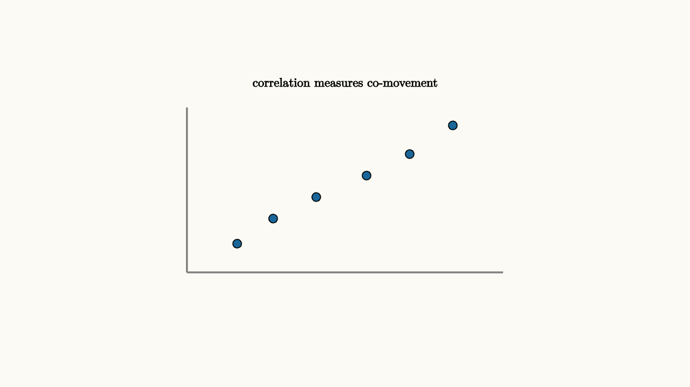

Correlations Warn Without Proving Cause
Correlation measures the tendency of two quantities to move together. Positive correlation means high values of one tend to come with high values of the other. Negative correlation means high values of one tend to come with low values of the other.
A scatterplot is usually the best starting point. Before computing a single number, look at the cloud. Is it a straight-line pattern, a curved pattern, two separate groups, or one extreme point pulling the whole calculation? The correlation coefficient summarizes linear co-movement, so the picture keeps the summary honest.
The correlation coefficient is
It ranges from $-1$ to $1$. It is unitless because covariance has been scaled by the standard deviations.
The scaling is helpful because it lets unlike units be compared. Height and weight, hours studied and test score, advertising spend and sales, temperature and electricity demand can all be placed on the same correlation scale. But that same compactness hides details. A correlation near zero can still conceal a curved relationship, and a high correlation can be created by a shared trend over time.

source
background = [0.985, 0.98, 0.955, 1]
camera = Camera(4.8b)
mesh scatter = block {
. stroke{GRAY, 2} Line(start: [-2.2, -1.1, 0], end: [2.2, -1.1, 0])
. stroke{GRAY, 2} Line(start: [-2.2, -1.1, 0], end: [-2.2, 1.2, 0])
. fill{BLUE} center{[-1.5, -0.7, 0]} Circle(0.06)
. fill{BLUE} center{[-1.0, -0.35, 0]} Circle(0.06)
. fill{BLUE} center{[-0.4, -0.05, 0]} Circle(0.06)
. fill{BLUE} center{[0.3, 0.25, 0]} Circle(0.06)
. fill{BLUE} center{[0.9, 0.55, 0]} Circle(0.06)
. fill{BLUE} center{[1.5, 0.95, 0]} Circle(0.06)
. center{[0, 1.55, 0]} Text("correlation measures co-movement", 0.62)
}
"positive correlation"
play Fade(0.6)Correlation is a warning light. It points to structure worth explaining. It does not by itself prove that changing one variable would change the other. A shared cause can create the pattern. Selection bias can create the pattern. Time trends can create the pattern.
Ice cream sales and drowning incidents both rise in warm weather. Buying ice cream is not the useful intervention. Heat and swimming exposure are part of the causal story.
Another everyday example is tutoring and grades. Students who receive tutoring may have lower average grades afterward than students who skipped tutoring. That observation alone is weak evidence about harm. The tutored students may have started with more difficulty, so selection created the association. To learn the effect of tutoring, we need to compare students who were similar before the intervention or use a randomized design.
source
param confound = 0.0
background = [0.985, 0.98, 0.955, 1]
camera = Camera(4.8b)
let Causal = |confound| block {
. fill{alpha{0.14} BLUE} stroke{BLUE, 3} center{[-1.4, -0.45, 0]} Circle(0.32)
. center{[-1.4, -0.45, 0]} Text("X", 0.62)
. fill{alpha{0.14} ORANGE} stroke{ORANGE, 3} center{[1.4, -0.45, 0]} Circle(0.32)
. center{[1.4, -0.45, 0]} Text("Y", 0.62)
. fill{alpha{0.14} GREEN} stroke{GREEN, 3} center{[0, 0.85, 0]} Circle(0.32)
. center{[0, 0.85, 0]} Text("Z", 0.62)
. color{GREEN} Arrow(start: [-0.25 * confound, 0.62, 0], end: [-1.1, -0.2, 0])
. color{GREEN} Arrow(start: [0.25 * confound, 0.62, 0], end: [1.1, -0.2, 0])
. center{[0, 1.55, 0]} Text("a hidden cause can explain both variables", 0.62)
}
"two variables"
mesh graph = Causal(confound: $confound)
play Fade(0.5)
"shared cause"
confound = 1.0
graph = Causal(confound: $confound)
play Lerp(1.0)Causal evidence asks what happens under intervention. Randomized experiments are powerful because random assignment breaks many confounding links. Observational studies need careful designs, controls, natural experiments, or strong domain arguments.
A useful causal question has the form "what would happen if we changed X?" If changing X directly changes Y, then an intervention should move Y. If a hidden variable Z causes both X and Y, then forcing X to change may leave Y mostly unchanged. That distinction is the reason causal diagrams use arrows rather than undirected associations.
The lesson to keep: correlation is useful evidence of association. Causation needs a model of how the world changes when we intervene. The graph invites the question; the causal story has to answer it.